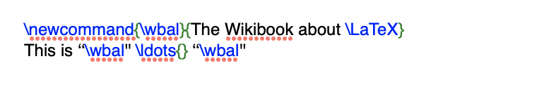
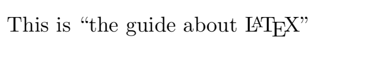
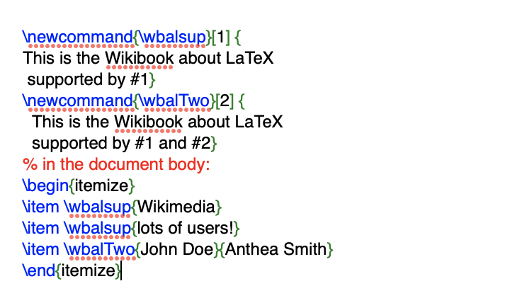
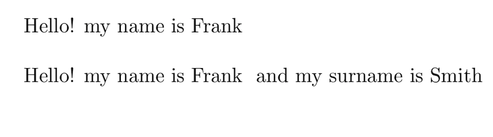

Latex Packages
Latex Macros
In LaTeX you can create your own commands, this commands are called macros.
How to create a macro
To add your own commands, use the command "\newcommand".This command requires two arguments:
the name of the command you want to create, and the defnition of the command.
Note that the command name can but need not be enclosed in braces, as you like.
The num argument in square brackets is optional. It specifies the number of arguments the new command takes
(up to 9 are possible).
If there is no number inside it means that the number of arguments is 0, so no arguments are accepted.


Example of a macro
Name your new command \cmdTwo and not \cmd2 because digits can not be used to name macros.
You can not create a new command that would overwrite an existing one.
But there is a special command in case you want do this it is
\renewcommand. It uses the same syntax as the \newcommand command.


DeclareRobustCommand
Some commands are fragile,it means they could fail in some environments.
If a macro works in body text but not in (for example) a figure caption,
it's worth trying to replace the \newcommand{\MyCommand}... with
\DeclareRobustCommand{\MyCommand}... in the preamble.